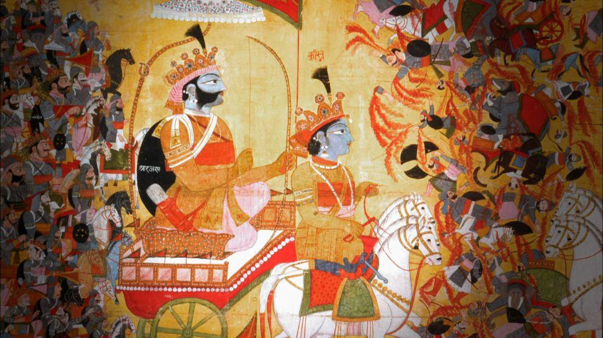
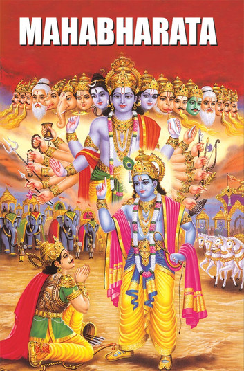
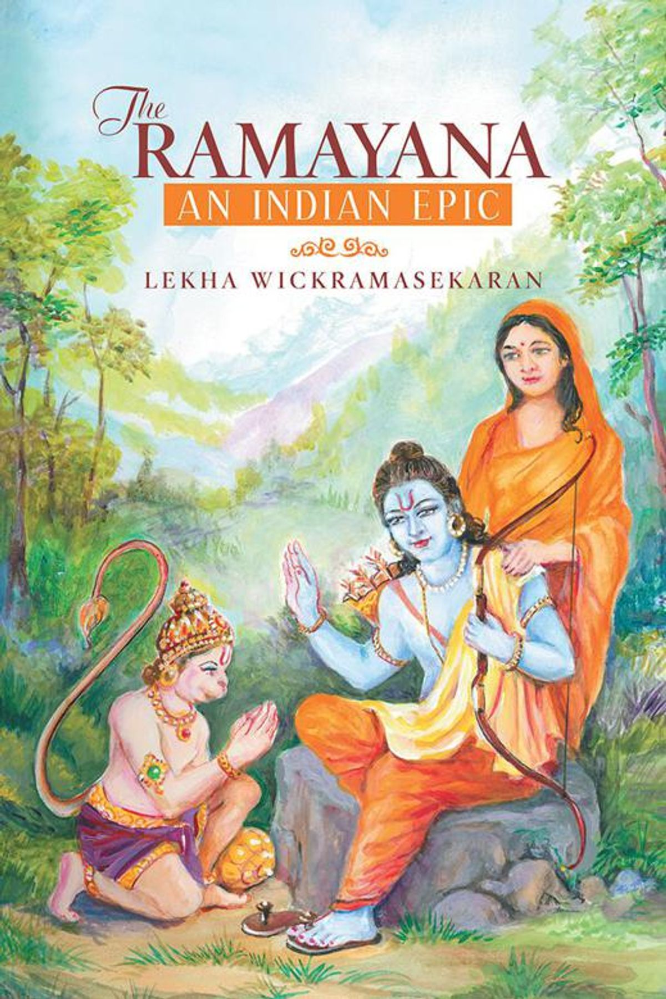
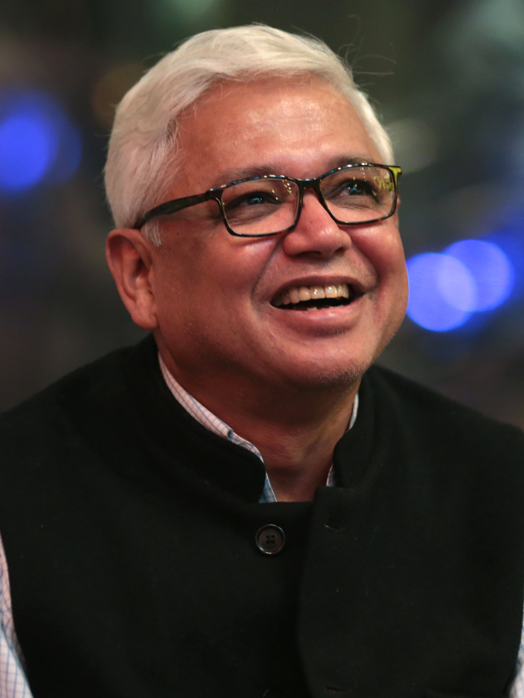

Asian literature, as broad and varied a subject as this is, possesses a richly varied narrative texture that has impacted not only regional literary communities but international literary communities as well. It must be appreciated for its broad historical depth, its rich and varied cultural representations, and its ongoing evolution. From India's ancient epics and ancient China's philosophical polemics to Japan's lyric poetry and the lyric fiction of contemporary writers, Asian literature offers profound insights into the human condition through the broadest range of cultural viewpoints.

Asian literature was born in ancient cultures. Ancient Indian epics "Mahabharata" and "Ramayana" and Chinese Confucian classics establish the template of the ageless tale and moral basis that continue to hold good today. In Japan, "The Tale of Genji" is an early prose work of fiction, and Middle Eastern Persian poetry, e.g., by Rumi and Hafez, explores profound spiritual and philosophical concerns. These ancient cultures, characterized by oral tradition, philosophical disputation, religious and spiritual questioning, and close association with the past, have provided rich sustenance to later literary evolution.


The impact of history, particularly colonialism, has heavily contributed to the themes and aesthetics of Asian literature. The cross-cultural encounter between Western and Asian cultures encouraged the intermingling of new and old styles of literature, and authors addressing issues of legacy inherited as a result of colonialism, identity, and resistance. Post-colonial literature is often characterized by conflicts between colonizers and the colonized and examining the complex and enduring legacy of the previous relations of power. Besides political and religious revolutions, wars, and social revolutions, all of which have also had their influence on the literary sphere, compelling writers to write about loss, survival, and social change.
Contemporary Asian literature is in a state of constant evolution, reflective of the complexity of a generation of globalization. Authors such as Haruki Murakami, Amitav Ghosh, and Kim Thúy are pushing the limits of dislocation, identity, and cross-cultural encounters without losing sight of the distinctive regional forms and traditions that constitute Asian storytelling. The growing power of Asian diaspora fiction adds another level of richness to the mix, bringing diverse commentary on cross-cultural identity and world issues.
